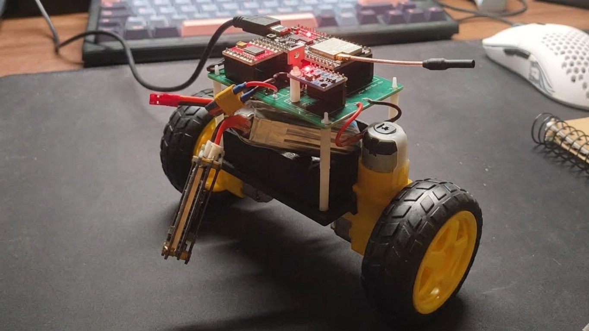

Sumo Battlebot
Hardware & FirmwareRobot de combate autónomo de alta potencia diseñado desde cero, integrando hardware, mecánica y software. Desarrollado sobre una PCB custom de 2 capas que aísla la etapa de potencia (LiPo 4S, drivers duales TB6612) de la lógica de 3.3V (ESP32-WROOM), empleando topología Star-GND para garantizar máxima inmunidad al ruido eléctrico de los motores. El chasis de doble altura optimiza el centro de gravedad albergando micromotores DC con reductora. El firmware, escrito en C++ modular vía PlatformIO, ejecuta una máquina de estados en tiempo real que procesa la telemetría de una matriz de 5 sensores IR (TCRT5000) para implementar rutinas agresivas de búsqueda, evasión de bordes y ataque directo.

Péndulo Invertido
Control TheoryEstabilización dinámica en tiempo real de un sistema mecánico inherentemente inestable. Implementación determinista de un controlador PID de lazo cerrado operando bajo un ciclo de trabajo estricto de 100 Hz sobre un microcontrolador ESP32. El sistema integra algoritmos de filtrado digital para mitigar el ruido en la adquisición de telemetría de los sensores, cálculo continuo del error de inclinación y ajuste fino empírico de las constantes proporcionales, integrales y derivativas (Kp, Ki, Kd). La salida del algoritmo genera señales PWM de alta resolución que comandan los drivers del motor, asegurando una corrección de position suave, milimétrica y sin oscilaciones parásitas.
CV Sumo Upgrade
PlannedEvolución de la plataforma de combate Sumo hacia la percepción espacial avanzada. Este proyecto en fase de investigación busca sustituir la matriz de sensores infrarrojos unidimensionales por un sistema de visión artificial integrado en el chasis. La arquitectura delegará el procesamiento visual a un hardware dedicado ejecutando modelos ligeros de detección de objetos (OpenCV) para identificar la posición, distancia y trayectoria del oponente. Los datos vectoriales extraídos alimentarán el ESP32 principal para ejecutar algoritmos de navegación predictiva y tácticas de intercepción dinámica en el dohyo.